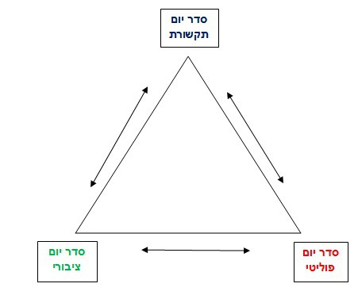
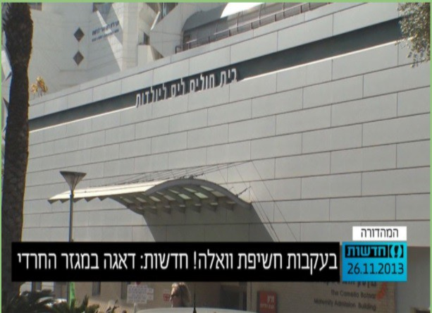
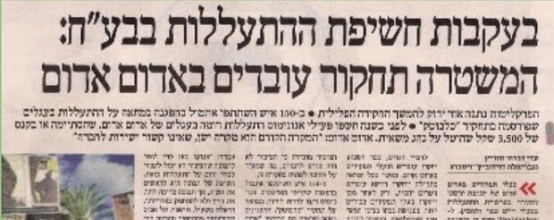
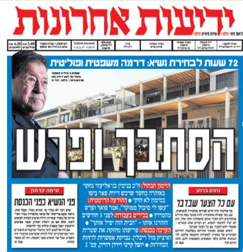
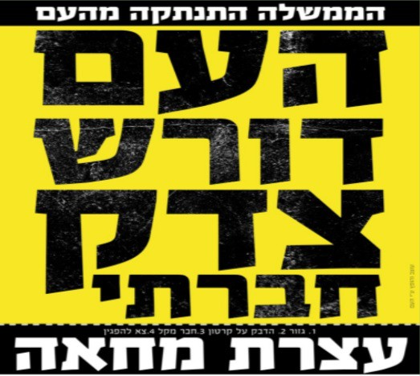
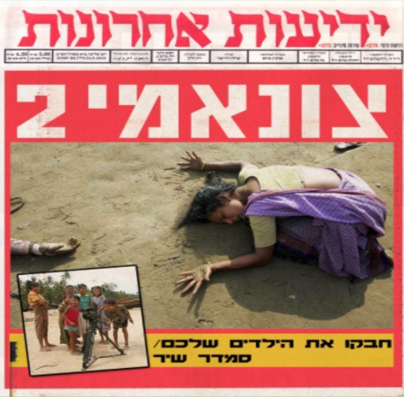

1. תפיסה זו מצביעה על הדרך שבה אמצעי התקשורת משפיעים על החברה.
2. הציבור לומד על החשיבות המיוחסת לנושא זה או אחר מתוך הדגשים באמצעי התקשורת.
3. כמות הדיווח ומידת הדיון בנושא מסוים קובעים את היקף תשומת הלב שלה הוא זוכה בקרב צרכני התקשורת ואת מקומו בסדר היום הציבורי.
4. בכוחה של המדיה לקבוע את חשיבותם של הנושאים העולים על סדר היום הציבורי, להעלות נושא לדיון או להסתירו (גודל כותרת, תמונה, צבע, מיקום וכו').
תקשורתי - ציבורי: סדר היום התקשורתי משפיע באופן ישיר על סדר היום הציבורי, משום שבידי התקשורת הסמכות והיכולת להסב את תשומת הלב של הציבור.
תקשורתי - פוליטי: סדר היום התקשורתי משפיע באופן ישיר גם על סדר היום הפוליטי, משום שהפוליטיקאים תופסים את התקשורת ככזו שמשקפת את דעת הקהל ואת סדר היום הציבורי.
פוליטי - תקשורתי: סדר היום הפוליטי משפיע באופן ישיר, בנסיבות מסוימות, על סדר היום התקשורתי.
ציבורי - פוליטי: סדר היום הציבורי עשוי לעצב את סדר היום הפוליטי. למשל, הפגנות ושביתות.
כללי וכולל: מכלול של גורמים ואירועים בעולם (למשל אסונות טבע גדולים כמו צונאמי, פיגועים, מהפכות וכו') יכולים לעצב באופן ישיר או עקיף את סדר היום הציבורי, התקשורתי והפוליטי. אירועים אלה הופכים להיות לשיחת היום בשל עוצמתם.
ייצוג הוא דימוי שמבקש לשקף משהו מן העולם האמיתי. הייצוג אינו יכול להיות ביטוי מושלם של המציאות: הוא לעולם תוצר של יוצרי הטקסט (למשל מנקודת מבטם) והוא מתווך על ידי המדיום בו הוא מועבר (ולכן הוא תמיד מוגבל לעומת המציאות). לכן הייצוג יהיה תמיד מוגבל ופשטני לעומת המציאות.
חורחה לואיס בורחס סיפר על קרטוגרפים שרצו לצייר את המפה האידיאלית עד שציירו אותה בקנה מידה של 1:1 והמידות שלה תאמו את המידות של המדינה... אז אין טעם למפה... כלומר, לייצוג יש תפקיד ויש יתרון בכך שהוא לא המציאות, הוא נועד "לייצג" את המציאות ולא להיות במקומה.
הייצוג הוא ברמה הסימבולית (הסמלית) (שפה, צילום, וידאו) והוא מבקש לייצג/לשקף את המציאות באמצעות סמלים כאלו (מילוליים, ויזואליים, קוליים), אולם זה תמיד יהיה ייצוג ולא המציאות עצמה, תמיד חלקי ולא שלם. יוצרי הטקסט בוחרים באילו סמלים להשתמש וכיצד להשתמש בהם (זה תלוי ביוצרים, במדיום, במטרת הייצוג).
בהקשרים שלנו עולות השאלות: מה הפערים בין ייצוג לבין המציאות, למשל: כיצד הייצוג של מיעוטים (ערבים, נשים, אנשים עם מוגבלויות) מיוצג בתקשורת: מי מייצג, כמה מייצגים, כיצד מייצגים?
לתקשורת אם כן תפקיד מכריע בהבניית המציאות ובעיצוב האופן בו האזרחים תופשים את המציאות, יש חשיבות עליונה לשאלות של ייצוג: מי מיוצג? כמה מיוצג? כיצד מיוצג וכן הלאה. ברור ששאלות של ייצוג הן גם שאלות של תקשורת (ז'אנר, צרכים של המדיום, הרצון לרייטינג או לאמת), אבל זו גם שאלה פוליטית: את מי לייצג וכיצד.
התקשורת בכלל והטלוויזיה בפרט משדרים תכנים אלימים רבים. בכל הז'אנרים ניתן להבחין בתכנים אלימים גלויים או סמויים מרומזים. החל מסרטי מלחמה, מערבונים, דרמות, משטרה, ספורט, פרסומות, וידיאו קליפים, חדשות ואפילו סדרות לילדים, סרטים מצוירים, קומדיות מצבים. אם נתייחס לאלימות מילולית בנוסף לאלימות פיזית הרי שבקומדיית מצבים ובתוכניות אירוח נמצא מרכיבים אלימים רבים. מכאן יוצא שהמשפחה ממוצעת מערבת בביתה על גבי מסך הטלוויזיה אלפי אירועי אלימות בשנה.
התיאוריות שעוסקות באלימות המשודרת עונות על השאלה: כיצד משפיעה האלימות המשודרת על הצופים, והאם היא מגבירה את האלימות בפועל?
תיאוריית הזיכוך: תיאוריה זו טוענת שבמהלך הפעילות הרגילה והשגרתית אנשים צוברים תסכול והם עלולים לפרוק אותו בהיותם במצבי לחץ, בהתנהגות אלימה. הזיכוך הוא פורקן של התסכול והמתח באמצעות צפייה בפעילות אלימה של האחר. מכאן, לפי תיאוריה זו, הצפייה באלימות בטלוויזיה מאפשרת לצופים לפרוק מטעני אגרסיה ותסכול באמצעות צפייה בפעילות אלימה של הגיבורים בטלוויזיה, מבלי להתנהג באלימות בפועל. ע"פ תיאוריה זו האלימות המשודרת ממלאת תפקיד חיוני בחברה בכך שהיא מאפשרת לצופים לשחרר את רגשי התסכול והזעם מבלי שיהיו מעורבים פיזית בפעילות אלימה. כך ניתן להסביר את הנאת הצופים לצפות בתחרויות ספורט כמו אגרוף, האבקות וכו'... שבהם ניתנת לגיטימציה לשחרור אגרסיות במסגרות של חוקים מוגדרים.
תיאוריית הלמידה והחיקוי: הטיעון העיקרי של תיאוריה זו הוא שהצופים עלולים ללמוד ולאמץ התנהגות אלימה בעקבות צפייה באלימות בטלוויזיה. בתנאים מסוימים, קובעת התיאוריה, שהצופים עלולים לחקות את ההתנהגות האלימה של הגיבורים שאיתם הם מזדהים. כלומר, האלימות בטלוויזיה משמשת עבור הצופים מכשיר הדרכה להתנהגות אלימה ומודל לחיקוי שלילי.
תיאוריית הגירוי לאלימות: תיאוריה זו טוענת שהחשיפה להתנהגות אלימה בטלוויזיה משמשת לצופים גירוי המגביר את ההתרגשות ועלול לגרום להתפרצות אלימה. דוגמאות לכך ניתן למצוא בהתנהגות של צופים לאחר צפייה באלימות. נמצא כי לאחר צפייה בקרב אגרוף הצופים התפרצו בעקבות המתח וההתרגשות שעורר הקרב הטלוויזיוני.
תיאוריית החיזוקים: תיאוריה זו טוענת שהאלימות שמשודרת בטלוויזיה מחזקת עמדות והתנהגויות הקיימות אצל הצופים. האלימות המשודרת בעצם מחזקת נטייה קיימת. מכאן, אצל צופים שקיימת בהם נטייה לאלימות האלימות המשודרת תחזק נטייה זו. אך בקרב צופים שקיימת בהם התנגדות לאלימות האלימות המשודרת תחזק את התנגדותם.
תיאוריית התירבות: גורסת כי האלימות המשודרת גורמת לצופים לתפוס את העולם כרע ואכזר ולפתח חוסר רגישות כלפי סבל של האחר.
רב תרבותיות – מושג המציין דיאלוג, כבוד הדדי, קבלת השונה, סובלנות ויצירת מכנה משותף עם תרבויות אחרות ועם בני אדם מתרבויות אחרות. חברה שמדגישה את השונות בין הפרטים בה ואף מחזקת אותה. גישה זו מדגישה את הריבוי כמרכיב יסודי של החברה, ואין מטשטשים בה את ההבדלים בין הזהויות השונות. בחברה רב תרבותית אין היררכיה תרבותית. בגישה זו מתנגדים לחלוקה לתרבות "עליונה ומועדפת" ולתרבות "נחותה" ומעדיפים תרבות מגוונת ולא אחידה.
תרבות: מערכת של ערכים, נורמות, סמלים וסימנים שמשותפים למספר בני אדם. לדוגמא: התרבות הישראלית שונה במקצת מהתרבות אמריקנית ושונה מאוד מהתרבות הטיבטית.
זהות: כל התכונות וסימני ההיכר המייחדים אדם מסוים. לפי הזהות של אדם אפשר להכיר אותו ולהבדיל אותו מאחרים.
סטריאוטיפ: הכללה הנעשית ע"י אנשים בעיקר לגבי קבוצות אחרות של אנשים או רעיונות, שימוש במאפיינים דומים שמדגישים את הדמיון ואת ההבדל ומביאים לפעמים להפרדה ושנאה בין הקבוצות.
ייצוג: דימוי, שיקוף, שיחזור של דבר מה מהעולם ה"אמיתי".
חברה פלורליסטית: חברה המכירה בגיוון החברתי והתרבותי של כלל האוכלוסייה, בשוני ובזהויות הנבדלות של הקבוצות שבתוכה.
לפי מילון אבן שושן, כור היתוך הוא "מתקן שמתיכים בו מתכות. בהשאלה; מקום שהתחשלו בו יחד דברים שונים ומנוגדים. מדינת ישראל היא כור היתוך של עדות ותרבויות שונות". כור היתוך הוא ביטוי מטאפורי הממחיש תפישה חברתית ותהליך בו אנשים וקבוצות מרקע תרבותי שונה מתמזגים ביחד לכלל חברה בעלת תרבות אחידה. זאת תוך כדי צמצום וביטול של המאפיינים התרבותיים המקוריים.
כור ההיתוך נכשל מכיוון שלא במהרה הסכימו התרבויות השונות במיוחד המזרחיות לוותר על ייחודן ותרבותן. הם שימרו את תרבותם באופנים שונים כמו: השירים המזרחיים שלא הושמעו ברדיו אך זכו למקום בתרבות ה"קסטות" של התחנה המרכזית, סרטי הבורקס המדברים על המזרחיים והיוו תחליף הולם לטלוויזיה בראשית דרכה ששידרה שידורים לאשכנזים בלבד, תנועות המחאה המזרחיות שקמו בשנות ה-70 (הפנתרים השחורים).
המעבר לפלורליזם: המזרחים החלו לפעול נגד האפליה בתנועות מחאה והביאו בסופו של המאבק לחילופי השלטון בשנת 1977, עליית הליכוד כמייצג את המזרחים. המהפך הפך את החברה הישראלית לחברה הטרוגנית, המורכבת מקבוצות שונות הנבדלות זו מזו מבחינת השתייכותן הלאומית, דתית, עדתית, פוליטית וכו'. היום מכירה המדינה בזכותן של קבוצות שונות לשמור על ייחודן. כלומר את רעיון כור ההיתוך מחליף רעיון הפלורליזם וההבנה שיש בחברה שסעים חברתיים בין קבוצות שונות שקיים ביניהן מתח וקיטוב.
תהליך ריבוי ערוצי התקשורת בשנים האחרונות מאיץ את תהליך הפלורליזם. המעבר מתקשורת ריכוזית לתקשורת ביזורית שיש לה כמה מוקדי כוח מקדמת את רעיון הרב תרבותיות. יותר ויותר קבוצות מקבלות במה להביע את דעתן ולגבש את זהותן דרך אמצעי התקשורת. לדוגמה: ריבוי ערוצי הנישה כמו ערוץ תכלת לדתיים, ישראל + לעולים מרוסיה ובריזה למזרחים.
תהליכים אלו של גיוון תרבותי יכולים להוביל לפלורליזם רב תרבותי המקבל את השונה כחלק בלתי נפרד של החברה הישראלית, תוך שמירה על קיומה של מדינת ישראל כמדינה יהודית, אבל זה גם עלול להחריף את הפער בין חלקי החברה ולהחריף את מאבקי הכוחות ביניהם.
החברה בישראל נמצאת בדילמה:
מצד אחד הקבוצות השונות נאבקות זו בזו, השיח הוא אלים ואגרסיבי, אין קבלה ומשמעות לשונה, אין ניסיון ללמוד עליו אלא רק להטיף לו ומתקיימת שלילה הדדית בין הקבוצות מה שמראה שאנו רחוקים מרב תרבותיות.
מצד שני יש אפשרות של חיים בחברה אחת שמתקיים בה דו שיח, דיאלוג ופתיחות. ריבוי הערוצים, תרגום לשפות שונות, ייצוג של הקבוצות בחדשות יכולים להראות נסיון לרב תרבותיות שאולי מראה את התחלתו עכשיו.